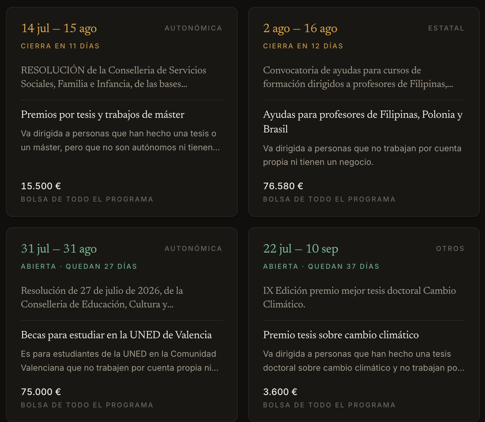
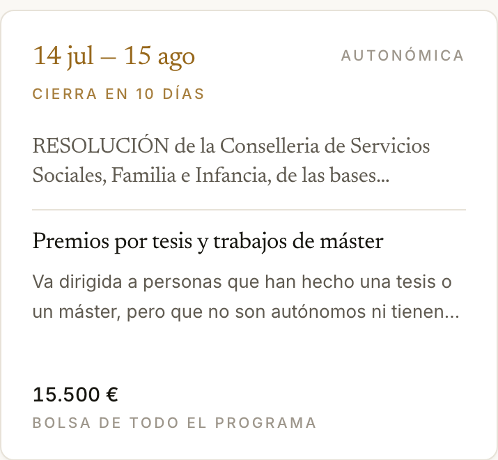

Ayudas públicas · España
Encaja.
Cada año se convocan miles de ayudas públicas que casi nadie pide, porque están escritas para juristas y repartidas por decenas de boletines. Encaja las reúne todas, las traduce, y te dice si puedes pedirlas antes de que pierdas la tarde leyendo un PDF.
«RESOLUCIÓN de 27 de julio de 2026, de la Conselleria de Educación, Cultura y Universidades, por la que se aprueban las bases reguladoras y se convocan ayudas económicas, en concepto de subvención, para contribuir a la financiación de los gastos de ejecución de acciones y programas…»
Para estudiar: universidad, cursos o material
Pueden pedirla particulares · Abierta hasta el 31 de agosto · 75.000 € para todo el programa
Cuatro pasos, en este orden. Cada uno depende del anterior.
Ocho preguntas en cristiano: si pides como persona o como negocio, qué te vendría bien ahora (formarte, salir de un apuro, encontrar trabajo), en qué situación estás, cuánto entra en casa y tu código postal. Nada de formularios con jerga.
Se conecta a la Base de Datos Nacional de Subvenciones, donde por ley se publica toda ayuda pública de España. Con tu código postal aparecen también las de tu ayuntamiento y tu diputación, que no salen en ningún buscador.
Descarta lo imposible con los datos oficiales, y para el resto lee el PDF de las bases, te hace las preguntas justas y dictamina: encajas, no encajas o depende — siempre con el texto legal en el que se apoya.
Una carpeta real con lo que debes cumplir, lo que hay que aportar, borradores redactados y el enlace a la sede donde se presenta. Te recuerda que necesitas DNI electrónico, certificado o Cl@ve, y que guardes el justificante.
Convocatorias reales, tal como estaban esta mañana. Arriba de cada tarjeta el plazo y cuánto queda; debajo, el título tal cual lo publicó el organismo y, separado por una línea, lo que significa y quién puede pedirla.


El color del plazo avisa solo: ámbar cuando queda poco, verde cuando hay margen.
Probarla ahoraSe abre y funciona: sin cuenta, sin registro y sin instalar nada. Las 609 ayudas abiertas están ya traducidas.
El paro y el Ingreso Mínimo Vital no son subvenciones: son prestaciones, y no se publican en la base nacional. Quien más las necesita nunca las encontraría ahí, así que Encaja las trae aparte con su enlace oficial.
SEPE · sin plazo, se piden cuando cumples los requisitos
Seguridad Social · sin plazo
Transición Ecológica · descuento en la luz y protección frente al corte
Bachillerato, FP y universidad · matrícula y cuantías por renta
No firma ni presenta nada en tu nombre. Manejar el certificado digital de alguien y firmar ante la Administración es irreversible. Encaja prepara el expediente; la persona firma. Los borradores van marcados como tales.
No inventa cuando falta un dato. Si el organismo no publica el plazo, dice «plazo sin publicar» y enlaza las bases, en vez de rellenarlo. Prefiere quedarse corta a sonar bien y que alguien pierda una convocatoria.
Aplicación local en Next.js con base de datos en tu propio ordenador. La inteligencia artificial es la que tú elijas —Gemini, Claude o GPT— con tu clave, que se comprueba antes de guardarse y nunca sale de tu máquina. 150 pruebas automáticas.
Solo las ayudas que tienes en pantalla, y lo traducido queda guardado: no se vuelve a pedir nunca. Cuanto más se usa, menos trabajo queda.
Ficha oficial, bases reguladoras y sede electrónica. Si algo no se puede comprobar, se dice.
Encaja es un proyecto público y sin ánimo de lucro. No cobra, no vende nada, no muestra publicidad y no tiene clientes.